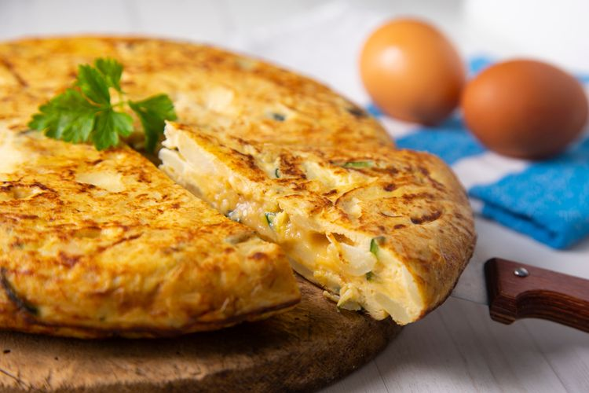

Omelet Kentang

Nilai Gizi / Porsi
- Energi: 297,4 kkal
- Protein: 9,7 gram
- Lemak: 16 gram
- Karbohidrat: 29,4 gram.
Bahan-Bahan
- 100 gram kentang, kukus, iris bulat tipis
- 1 buah tomat, iris bulat tipis
- 1 butir telur ayam
- 1/4 sdt garam
- 10 gram keju parut
- 1 sdt minyak goreng atau mentega
Cara Membuat
- Kocok telur ayam kemudian beri garam, sisihkan
- Panaskan wajan dadar anti lengket, beri minyak
- Tuang kocokan telur, lalu tambahkan kentang dan tomat
- Taburi atasnya dengan parutan keju, lalu masak sampai matang
- Setelahnya, angkat dan hidangkan selagi panas.
Kembali ke Menu